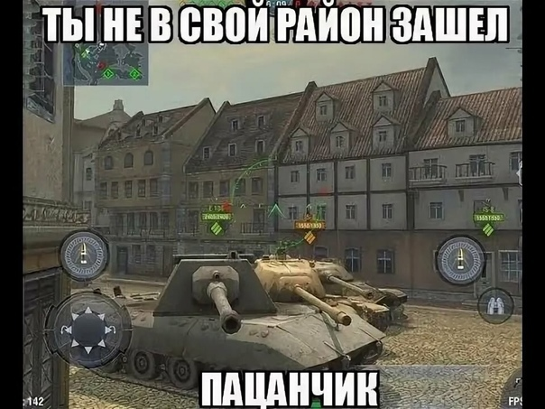

обзорчик
Как и в любой другой индустрии, игровые компании пытаются удерживать высокие места в рейтингах, клонируя успешные продукты. Именно по этой причине рынок мобильных игр превращается в довольно скучную войну клонов.
Мне нравится игра World of Tanks Blitz, потому что она просто отличная. Там нет таймеров. Нет жизней. Не надо ничего сажать. Не надо ничего изготавливать и искать ресурсы. Здесь только веселье и увлекательные многопользовательские битвы, где прогресс достигается игрой, а не ожиданием чего-то. World of Tanks Blitz заставляет большинство наших девайсов с сенсорными экранами предлагать опыт, который не может предоставить ни одна другая игра.
Геймплей: Идеальный шутер от первого лица для мобильных плафторм
World of Tanks Blitz (WoTB) представляет собой сражение на рандомно выбранной карте между двумя командами, состоящими из семи игроков. Условия победы просты: команда должна или уничтожить всех оппонентов, или удерживать центральную зону, помеченную флагом непрерывно в течение 100 секунд. В WoTB нет респауна (respawn, место постоянного появления какого-либо персонажа или объекта игрового мира — прим. ред.), что означает, что после того, как танк игрока уничтожен, активная фаза его сессии закончена, и на поле сражения он может остаться только в качестве зрителя. На каждую битву может уйти не более шести минут, хотя, как правило, битвы заканчиваются до этого срока.
Дизайн карты
В WoTB есть десятки карт, каждая с собственными характеристиками: размером, дизайном, топографией, расположением, погодой и планировкой. Каждая карта предлагает свою тактику каждому танку. Все карты небольшие — это помогает обеспечить короткую продолжительность сессий. В то же время они достаточно большие для того, чтобы было возможно реализовать стратегический командный геймплей.
В отличие от MOBA, эти карты не симметричны и не идеально сбалансированы. Вместо этого карты тематически расположены на полях сражений Второй мировой войны, полны графического и структурного разнообразия — совсем как в шутерах от первого лица.
Недостаточно хорошая балансировка карт не становится проблемой как раз благодаря тому, что игрок тратит не так много времени на бой. Из-за того, что сессии настолько короткие, он не успевает почувствовать разочарование от того, что его танк не оптимально подходит под определенное поле битвы или начальную позицию.
Битвы в игре World of Tanks Blitz проходят в самых легендарных местах Второй мировой войны — начиная от северо-африканских пустынь и заканчивая покрытыми снегом российскими деревнями.
Освоение карты — это длительный и забавный процесс. Поначалу сражения хаотичны, потому что новые игроки просто неуклюже катаются туда-сюда и стреляют во всё, что движется. Когда игроки набираются опыта, они начинают понимать сильные и слабые стороны различных видов танков, а это позволяет им лучше читать карты.
Если вкратце, холмы со скалами, поросшие деревьями, являются потенциальными местами расположения самоходных противотанковых установок, а широкие дороги становятся местами сражений для тяжёлых танков.
Но неизменным на протяжении всей игры остается один ключевой момент: никогда не иди в бой один, потому что ты погибнешь практически мгновенно, а это вызовет раздражение всей команды, которая останется без одного рабочего танка.
Дизайн танков и их роли
Впечатляющий список из 90 танков в WoTB разделен на четыре типа: лёгкие танки, средние танки, тяжёлые танки и самоходные противотанковые установки. Каждый тип танка играет собственную роль в команде.
В игре World of Tanks Blitz есть четыре принципиально различных типа танков. В зависимости от того, какой танк выбирает игрок, его роль в игре будет заключаться в разведке, защите фланга, он будет атаковать или вести снайперский огонь
Лёгкие танки, благодаря своей лёгкой броне и слабому оружию — быстрые и маневренные. Их роль — искать вражеские танки и делать так, чтобы все их видели. Они раздражают врага, вынуждая его тем самым выдавать своё местоположение. Иногда вы можете проскочить за спинами противника и обстрелять их по самым слабым местам.
Разведка местоположения противника жизненно важна для битв. Если в команде не будет хотя бы пары снующих по полю боеспособных лёгких танков, то вам придётся только отвечать на огонь противника, а не открывать огонь первыми.
Сам по себе концепт разведки выделяет WoTB из всех других игр, в которые мне довелось поиграть. Очень весело ехать в самую гущу событий, особенно если вас по пятам преследует вражеский огонь. Процесс сбалансирован так, что игроки на лёгких танках очень хорошо вознаграждаются за обнаружение вражеских танков, а это позволяет продвигаться по игре, не участвуя при этом в перестрелке.
К сожалению, лёгкие танки быстро теряют свои места в списке и на их место приходят более специализированные средние танки.
Средние танки заполняют пробел между лёгкими и тяжёлыми танками. Они очень разнообразны — благодаря множеству различных орудий и брони, которыми они оборудованы.
Роль средних танков постоянно меняется на протяжении всей битвы. Они могут наступать с фланга или функционировать как разведчики. Средние танки могут даже сражаться на линии огня, при условии, что игрок прячется от обстрела за какими-нибудь постройками. Средние танки требуют от игрока досконального знания его сильных и слабых сторон.
Балансировка танков в игре WoTB очень хороша, но всё-таки далека от идеальной. Один из классов — лёгкие танки — устаревает за пару месяцев игры именно благодаря большому разнообразию средних танков, способных заменить в бою лёгкие.
Тяжёлые танки — это сила, с которой приходится считаться. Это хорошо бронированные машины с мощными орудиями. Но сильная сторона тяжелых танков может также считаться их слабостью, потому что они медлительны и на них сложно маневрировать.
Обычно эти танки расположены в первых рядах наступления. Их роль заключается в том, чтобы привлечь огонь на себя, потому что они могут поглощать большое количество урона. Броня тяжелых танков слаба по бокам и сзади, что делает их уязвимыми для атак с фланга со средних и некоторых лёгких танков.
Противотанковые установки обладают самым тяжелым оружием. Есть два вида противотанковых установок: с мощным оружием, тяжёлой броней и очень отграниченной мобильностью, и те, которые также известны как «стеклянные пушки», — то есть установки, которые обладают очень мощным оружием, но их броня совсем никуда не годится.
Противотанковые установки — это снайперы игры WoTB. Они занимают позиции на возвышенности, где хорошая видимость, оптимальный угол для стрельбы и охват территории. Такие установки очень сильно зависят от разведчиков, которые должны помечать позиции противника. Это танк для очень терпеливых игроков, которые готовы спокойно сидеть в стороне от места событий и делать несколько выстрелов, с которыми, однако, приходится считаться.